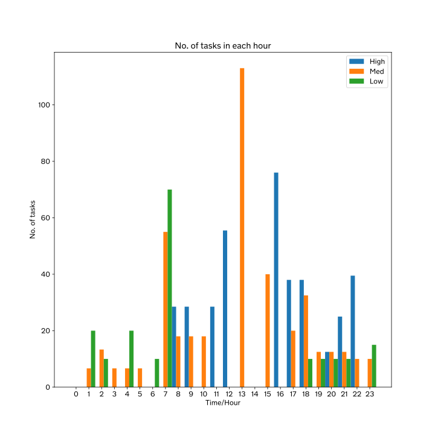
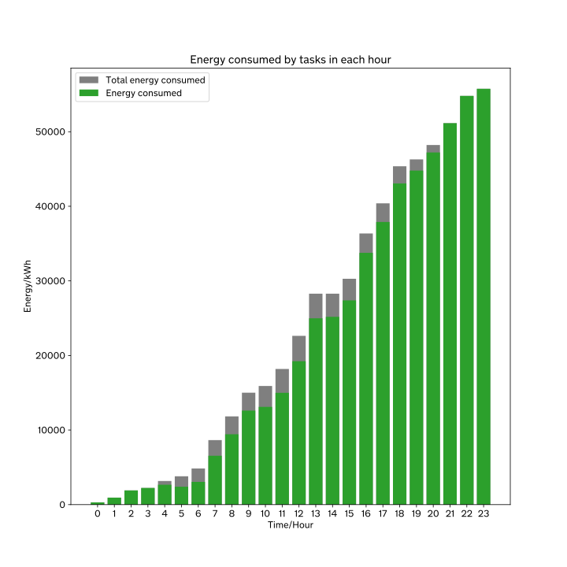
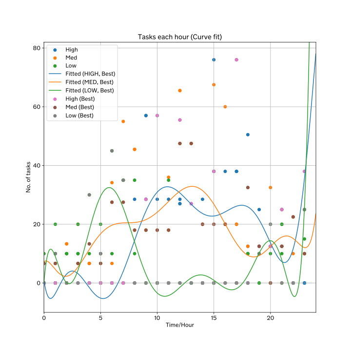
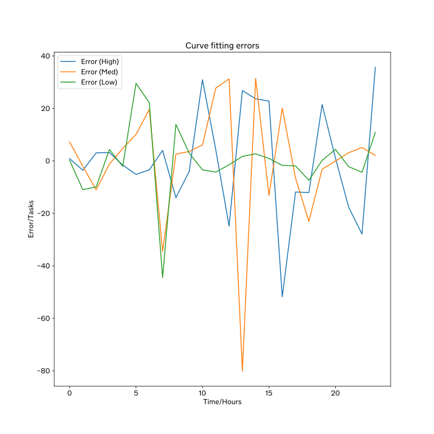

| DID | SJC |
|---|---|
| NAME | Problem E |
| AUTHOR | Ms. F Cheung |
| DESCRIPTION | The report of team SJC. |
| DATE | 24 Jan 2025 |
Our project optimizes energy usage and task scheduling using a Python-based mathematical model over 24 hours. It balances renewable and traditional energy sources while maximizing task performance and minimizing costs.
We define data, import key modules, and create tasks with attributes like start time, priority, workload, and delay.
The core focuses on finding optimal solutions through mathematical approaches, iterating through tasks over 10,000 simulations. Energy consumption is calculated hourly, tasks are delayed if needed, and costs are minimized.
Statistical analysis is performed on optimized task schedules, categorized by priority. Data is visualized using scatter plots and fitted to polynomial curves to identify task distribution trends.
Our project offers insights into energy optimization and task scheduling, highlighting challenges in real-world applications and suggesting avenues for future improvement.
We chose problem E as our focusing problem this time. The task is about creating an optimization model that can maximize the green energy used, and minimize:
The amount of green energy available, prices of energy supply, and task demand for each hour are given. Therefore, the goal is to create a model (function) that represents the number of tasks for each hour. The task management system can thus use this model to decide the amount of tasks that are suitable for processing in the current hour, and decide whether to delay outstanding tasks, in order to save cost, energy and promote green energy.
Our solution should be based on the following principles:
## P = \begin{cases} 100\% \cdot 0.6 \cdot e^d,& \text{if } u = \text{HIGH}\\ 100\% \cdot 0.7 \cdot e^d,& \text{if } u = \text{MED}\\ 100\% \cdot 0.8 \cdot e^d,& \text{if } u = \text{LOW}\\ \end{cases} \text{, where } \begin{cases} d &= \text{The delay in hours}\\ u &= \text{The urgency}\\ \end{cases} ##
The cost to run the tasks should be optimized as well. Therefore, for each iteration, if # \Sigma_{i=1}^n {T_{mark,i}} \gt ( \Sigma{T_{mark}} ) _{max}, \text{where } T_{mark} \text{ is the mark of a task} #, and # \Sigma_{i=1}^n {E_i} \lt ( \Sigma{E_i} ) _{min}, \text{where } E \text{ is the price of the energy consumed in an hour} #, the iteration is considered to be better than the last one. # ( \Sigma{T_{mark}} ) _{max} # and # ( \Sigma{E} ) _{max} # should be replaced with # \Sigma_{i=1}^n {T_{mark,i}} # and # \Sigma_{i=1}^n {E_i} # respectively.
We hope to obtain three arrays of integers, each describing the number of high-urgency, medium-urgency and low-urgency tasks. Then, by curve fitting, we would obtain three functions, # N_{high}(t) #, # N_{medium}(t) #, and # N_{low}(t) #. The three functions would allow interpolation in the dataset.
REF 1 - Alex Hawkes (n.d.). The real cost of latency. Retrieved from https://blog.consoleconnect.com/the-real-cost-of-latency
Python [REF 1] on Jupyter Notebook [REF 2] are used to implement the solution. See Appendix A for more information on the code.
We mainly used the following libraries:
polyfit() function provides polynomial curve fitting functions, which
are crutial to our goal.
This code defines two classes: Priority (an enum for task priority with associated energy consumption) and
Task (containing start time, priority, workload, and delay, with a method calc_mark calculating a task's mark
based on priority and delay using an exponential function). This code defines two classes: Priority (an enum for
task priority with associated energy consumption) and Task (containing start time, priority, workload, and delay,
with a method calc_mark calculating a task's mark based on priority and delay using an exponential function). A list
ORIG_TASKS is created, populating it with multiple Task instances with varying parameters. An optimization process
iteratively delays tasks based on probabilities (1/4 initially, 1/2 if renewable energy is insufficient), and awards
points randomly for delays, calculates energy costs, and updates the total marks.
For each hour delay, we will deduct 20,30 and 40 percent of the score each hour a low, medium, high urgency task is delayed respectively
The algorithm aims to maximize total marks while minimizing energy costs, iterating 10,000 times to find an optimal solution. Finally, statistical analysis is performed on the results, summing task values, and fitting curves (9th-power polynomials) to the number of tasks per hour for each priority level.
The results will be evaluated with the following
REF 1 - Author unknown (n.d.). Welcome to Python.org. Retrieved from https://python.org
REF 2 - Author unknown (n.d.). Project Jupyter | Home. Retrieved from https://jupyter.org/
REF 3 - Author unknown (n.d.). NumPy. Retrieved from https://numpy.org/
REF 4 - Author unknown (n.d.). Matplotlib — Visualization with Python. Retrieved from https://matplotlib.org/
REF 5 - Author unknown (n.d.). SymPy. Retrieved from https://www.sympy.org/en/index.html
REF 6 - Author unknown (n.d.). Residual Analysis . Retrieved from https://www.mathworks.com/help/curvefit/residual-analysis.html
REF 7 - Retrieved from https://www.investopedia.com/terms/r/residual-sum-of-squares.asp
REF 8 - Simske, S. (2019). Modeling and model fitting. Meta-Analytics, (), 217-228. https://doi.org/10.1016/B978-0-12-814623-1.00007-1
After running the code, we have the following results.
Our most optimized solution for task arrangement is described as follows.
| Hour | Tasks (High) | Tasks (Medium) | Tasks (Low) |
|---|---|---|---|
| 0 | 0 | 0 | 0 |
| 1 | 0 | 6.66666667 | 20 |
| 2 | 0 | 13.33333333 | 10 |
| 3 | 0 | 6.66666667 | 0 |
| 4 | 0 | 6.66666667 | 20 |
| 5 | 0 | 6.66666667 | 0 |
| 6 | 0 | 0 | 10 |
| 7 | 0 | 55 | 70 |
| 8 | 28.5 | 18 | 0 |
| 9 | 28.5 | 18 | 0 |
| 10 | 0 | 18 | 0 |
| 11 | 28.5 | 0 | 0 |
| 12 | 55.5 | 0 | 0 |
| 13 | 0 | 113 | 0 |
| 14 | 0 | 0 | 0 |
| 15 | 0 | 40 | 0 |
| 16 | 76 | 0 | 0 |
| 17 | 38 | 20 | 0 |
| 18 | 38 | 32.5 | 10 |
| 19 | 0 | 12.5 | 10 |
| 20 | 12.5 | 12.5 | 10 |
| 21 | 25 | 12.5 | 10 |
| 22 | 39.5 | 10 | 0 |
| 23 | 0 | 10 | 15 |

The energy consumed by tasks are shown as follows.
| Hour | Total energy (kWh) | Green energy (kWh) | Green energy % |
|---|---|---|---|
| 0 | 300 | 300 | 100.0 |
| 1 | 933.3333333333334 | 933.3333333333334 | 100.0 |
| 2 | 1900.0 | 1900.0 | 100.0 |
| 3 | 2233.3333333333335 | 2233.3333333333335 | 100.0 |
| 4 | 3166.666666666667 | 2666.666666666667 | 84.21052631578948 |
| 5 | 3800.0000000000005 | 2400.0000000000005 | 63.15789473684211 |
| 6 | 4850.0 | 3050.0 | 62.88659793814433 |
| 7 | 8650.0 | 6550.0 | 75.72254335260115 |
| 8 | 11830.0 | 9430.0 | 79.71259509721048 |
| 9 | 15010.0 | 12610.0 | 84.01065956029313 |
| 10 | 15910.0 | 13110.0 | 82.40100565681962 |
| 11 | 18190.0 | 14990.0 | 82.40791643760308 |
| 12 | 22630.0 | 19230.0 | 84.97569597878922 |
| 13 | 28280.0 | 24980.0 | 88.33097595473834 |
| 14 | 28280.0 | 25180.0 | 89.03818953323905 |
| 15 | 30280.0 | 27380.0 | 90.42272126816381 |
| 16 | 36360.0 | 33760.0 | 92.84928492849285 |
| 17 | 40400.0 | 37900.0 | 93.8118811881188 |
| 18 | 45365.0 | 43065.0 | 94.93001212388405 |
| 19 | 46290.0 | 44790.0 | 96.75955930006481 |
| 20 | 48215.0 | 47215.0 | 97.92595665249404 |
| 21 | 51140.0 | 51140.0 | 100.0 |
| 22 | 54800.0 | 54800.0 | 100.0 |
| 23 | 55750.0 | 55750.0 | 100.0 |

After curve fitting with a 9th-power polynomial, we obtained the following.
The following are our polynomials after curve fitting with a 9th-power polynomial.
## \begin{align} N_{high}(t) = 0.297808346409592 t^{9} \\ + 45.6485182325012 t^{8} \\ - 60.1924792216226 t^{7} \\ + 29.253711085704 t^{6} \\ - 6.79430967517511 t^{5} \\ + 0.866438823805813 t^{4} \\ - 0.064303494446529 t^{3} \\ + 0.00277294882625502 t^{2} \\ - 6.4463137361545 \cdot 10^{-5} t \\ + 6.24881275450244 \cdot 10^{-7} \end{align} ##
## \begin{align} N_{medium}(t) = 7.24718573883481 t^{9} \\ + 3.23059528348113 t^{8} \\ - 11.1504146340085 t^{7} \\ + 6.80560972459648 t^{6} \\ - 1.72380342413603 t^{5} \\ + 0.230262607365821 t^{4} \\ - 0.0175234269027381 t^{3} \\ + 0.000762758194576554 t^{2} \\ - 1.76748679195197 \cdot 10^{-5} t \\ + 1.6908110086406 \cdot 10^{-7} \\ \end{align} ##
## \begin{align} N_{low}(t) = \displaystyle 0.297808346409592 t^{9} \\ + 45.6485182325012 t^{8} \\ - 60.1924792216226 t^{7} \\ + 29.253711085704 t^{6} \\ - 6.79430967517511 t^{5} \\ + 0.866438823805813 t^{4} \\ - 0.064303494446529 t^{3} \\ + 0.00277294882625502 t^{2} \\ - 6.4463137361545 \cdot 10^{-5} t \\ + 6.24881275450244 \cdot 10^{-7} \\ \end{align} ##
The following scatter graph shows the overall trend of the tasks, and the lines represent the fitted curves.

| Tasks (High) | Tasks (Medium) | Tasks (Low) |
|---|---|---|
| 9488.170158471446 | 12297.42089022263 | 4053.669801287673 |
| Tasks (High) | Tasks (Medium) | Tasks (Low) |
|---|---|---|
| 395.3404232696436 | 512.3925370926096 | 168.90290838698635 |

Mathematical modeling is indeed a powerful tool for solving complex problems, which unfortunately comes with several inherent limitations that can affect its applicability and accuracy in real-world scenarios. The limitations of the mathematical modeling approach described in the Appendix A are inherent in both the methodology and the practical implementation of the task optimization process. These limitations highlight the challenges of balancing theoretical models with real-world constraints and achieving optimal solutions. Below is a detailed discussion of the most significant limitations:
The use of randomization in delaying tasks and awarding marks also results in a stochastic process that prioritizes certain solutions over others purely by chance. While the program iterates through 10,000 simulations, even this number of iterations may not be sufficient to find the true global optimum in a highly complex solution space. Moreover, the model's reliance on heuristics, such as delaying tasks only until 23:00, imposes additional constraints that limit the scope of potential solutions.
Also, a power supply system has energy dissipated into the surrounding environment, so the estimated energy usage is less than the actual amount. Assuming linear power usage also cannot reflect the real-world scenarios, as computers use varying amount of energy when processing a task.
In conclusion, while our approach provides a structured framework for solving the problem, it is constrained by several limitations. The reliance on looping mechanisms and randomization, errors introduced through curve fitting, and the inability to achieve truly optimal solutions all contribute to the model's shortcomings. Additionally, the rigid time constraints, difficulty in balancing competing objectives, and static assumptions about energy supply further reduce its applicability to real-world scenarios. Addressing these limitations through more sophisticated algorithms, dynamic inputs, and better optimization strategies would enhance the model’s accuracy and usability.